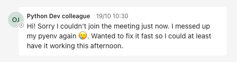
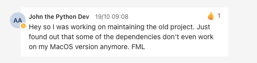
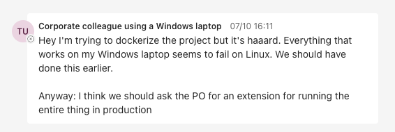
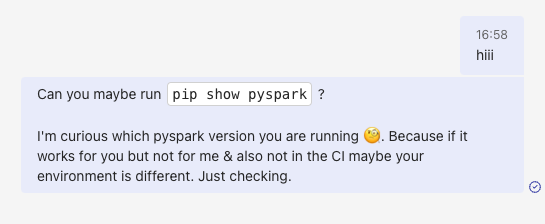
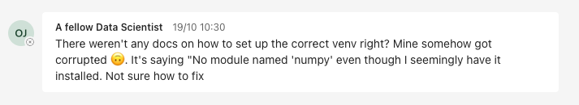
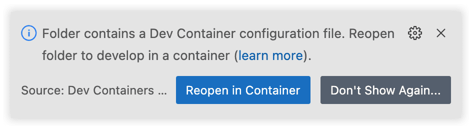
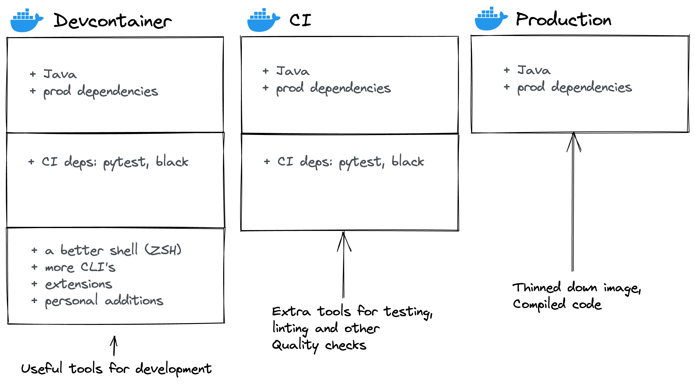

Devcontainer for your
Python project 🐳
The use case¶
|
|
|
So we need to align on:
- 📌 A specific Java version
- 📌 A specific Python version
- 📌 A specific
pysparkversion
→ otherwise we do not enjoy the guarantees we want in production code
|  |  | |
|  |  | |
|  | ||
Devcontainers to the rescue ⛑!
Docker helps us create a formal definition of our environment. Devcontainers allow you to connect your editor (IDE) to that container.
|
😐 Disadvantages
|
✅ Advantages
|
|
👷🏻♂️ Let's build a Devcontainer!
Let’s say we have a really simple project that looks like this:
$ tree .
.
├── README.md
├── requirements.txt
├── requirements-dev.txt
├── sales_analysis.py
└── test_sales_analysis.py
The .devcontainer folder
There will be two main files:
devcontainer.jsonDockerfile
Create a new file called devcontainer.json:
{
"build": {
"dockerfile": "Dockerfile",
"context": ".."
}
}
So how does this Dockerfile look like?
FROM python:3.10
# Install Java
RUN apt update && \
apt install -y sudo && \
sudo apt install default-jdk -y
## Pip dependencies
# Upgrade pip
RUN pip install --upgrade pip
# Install production dependencies
COPY requirements.txt /tmp/requirements.txt
RUN pip install -r /tmp/requirements.txt && \
rm /tmp/requirements.txt
# Install development dependencies
COPY requirements-dev.txt /tmp/requirements-dev.txt
RUN pip install -r /tmp/requirements-dev.txt && \
rm /tmp/requirements-dev.txt
Opening the Devcontainer
Open up the command pallete (CMD + Shift + P) and select “Dev Containers: Reopen in Container”:
Upon opening a repo with a valid .devcontainer folder, you are already notified:
Your VSCode is now connected to the Docker container 🙌🏻:
What is happening under the hood 🚗¶
Opening your Devcontainer with the click of a button¶
[

](
https://vscode.dev/redirect?url=vscode://ms-vscode-remote.remote-containers/cloneInVolume?url=https://github.com/godatadriven/python-devcontainer-template
)
This renders the following button:
What kind of README would you rather like?
Extending the Devcontainer¶
- Install a non-root user for extra safety and good-practice
- Pass in custom VSCode settings and install extensions by default
- Be able to access Spark UI (opening up port 4040)
- Run Continuous Integration (CI) in the Devcontainer
Let's see how.
Installing a non-root user¶
So let's go ahead and create a user for this scenario.
Add the following property to devcontainer.json:
That's great! When we now start the container we should connect as the user nonroot.
Passing custom VSCode settings¶
"customizations": {
"vscode": {
"extensions": [
"ms-python.python"
],
"settings": {
"python.testing.pytestArgs": [
"."
],
"python.testing.unittestEnabled": false,
"python.testing.pytestEnabled": true,
"python.formatting.provider": "black",
"python.linting.mypyEnabled": true,
"python.linting.enabled": true
}
}
}
The defined extensions are always installed in the Devcontainer. However, the defined settings provide just a default for the user to use, and can still be overriden by other setting scopes like: User Settings, Remote Settings or Workspace Settings.
Accessing Spark UI¶
"portsAttributes": {
"4040": {
"label": "SparkUI",
"onAutoForward": "notify"
}
},
"forwardPorts": [
4040
]
When we now run our code, we get a notification we can open Spark UI in the browser:
Resulting in the Spark UI like we know it:
Running our CI in the Devcontainer¶
Wouldn't it be convenient if we could re-use our Devcontainer to run our Continuous Integration (CI)
pipeline as well? Indeed, we can do this with Devcontainers. Similarly to how the Devcontainer image
is built locally using docker build, the same can be done within a CI/CD
pipeline.
There are two basic options:
1. Build the Docker image within the CI/CD pipeline¶
To now build, push and run a command in the Devcontainer is as easy as:
That's great! Whenever this workflow runs on your main branch, the image will be pushed to the configured registry; in this case GitHub Container Registry (GHCR).
See below a trace of the executed GitHub Action:
Awesome!
The final Devcontainer definition¶
First, devcontainer.json:
"portsAttributes": {
"4040": {
"label": "SparkUI",
"onAutoForward": "notify"
}
},
"forwardPorts": [
4040
]
And our Dockerfile:
Three environments 🎁¶

Going further 🔮¶
- Devcontainer features
- Devcontainer templates
-
💡 Pro tip: mount your AWS/GCP/Azure credentials
Awesome resources¶
Concluding¶
Now only VSCode, but open specification taking shape.